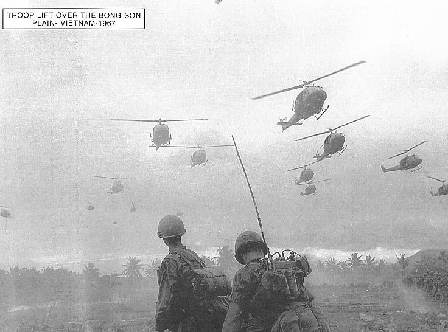
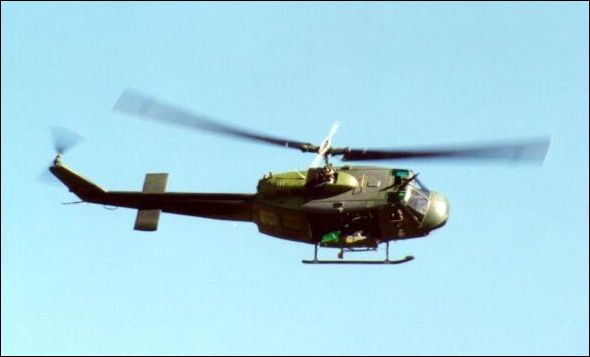
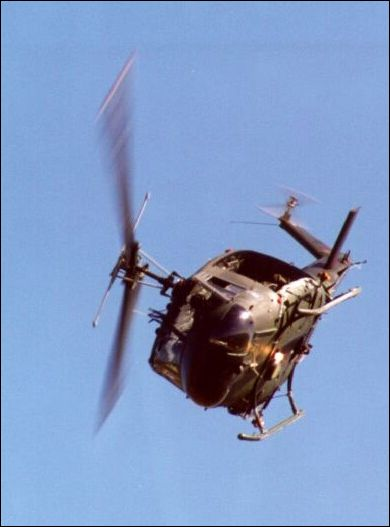

~
Hitch - Hiking
by Elias Alias
~

Photos courtesy of Huey.co.uk/ at this url: http://www.huey.co.uk/gallery.php
~
Lee walked past a cluster of tin-topped ply-wood hootches to officers'
country, where he traded a bag of warm fresh doughnuts for a quart bottle of
scotch whiskey, which he carried openly to the chopper pads. He approached a
couple of pilots and bribed his way aboard a Huey slick bound for Da Nang. He
sat on a sandbag in the starboard-side hatch beside the gunner and rested his
boots outside on the the chopper's starboard-side runner. He shouldered the M-
14 strap and dangled the barrel downward between his boots as the slick lifted
off with its customary nose-down drift through churning dust clouds. The chopper
lifted over the tree tops west of the base, over An Tan's ragged beggars, over
the tents of one-five, the first battalion of the fifth Marines. It swooped
'round to the north toward Tam Ky and Da Nang. For a couple of minutes it flew
over highway 1, the only highway running north-south to connect Saigon with Da
Nang and ultimately, to North Viet Nam, and all the way to Hanoi.
The sleek loud bird was fast, and it overtook the peasant traffic which slowly
made its way over the axle-deep dirt and mud trenches of highway 1. Pavement did
not exist for thirty miles in any direction from Chu Lai's bustling Marine base,
and the dirt trail through rice fields and jungles over which Lee was now
swiftly gliding would not be called a highway in any western nation. But in Viet
Nam it was the highway. Lee watched as faces below turned upward to look at the
Huey. The day was clean and blue skies held a strong light and he could see the
dust-tamps of foot-falls as the sandaled peasants trudged far below his iron
bird.
"Sure can't figure these people." he mused to himself as he watched the trickle
of traffic on the ground below. From the chopper door he could see the endless
tide of travelers on the roadway below. It was 1967 and the highway was not
packed so far out from Da Nang as it would be four years later. Especially on
this brilliant day in '67 the highway appeared to have light traffic. Lee would
know, for he often rode the long iron birds up out of Chu Lai's chopper pads, a
hitch-hiker with a camera and his weapons and light gear. Neither Lee, nor any
other Marine in the war that day had any idea about what eight years would do to
this highway 1; about what scenes from hell would some day splatter the front
pages of newspapers and magazines all around the world.
Neither Lee nor any other Marine could envision the mass exodus from Da Nang
which would scorch highway 1 in the Spring of 1975; the packed throngs of
fleeing people who would fall under the NVA's arty by the thousands as all NVA
Divisions would push south on wheels of death, murdering and maurauding amid
unarmed multitudes who would be trying to carry whatever they had left of family
and goods down that fabled old road; the maiming and mauling of everything by
ordance and fire; the blown-up busloads of mammasans and babysans and old men
with dirty beards and stained clothing; the untold thousands of highway 1 deaths
wrought by a cocky wave of advancing NVA Divisions.
Lee had no way of guessing that such a debacle could be in the cards, that in
1975 the U.S. Marines would be forced to save what they could of America's face
by evacuating the Embassy from its rooftop, salvaging whom they could before
being forced to leave screaming, horrified countless thousands below to die when
their time simply ran out. Not on this day could such horrors be imagined. This
was 1967, too far removed from the steeled cast into which American political
corruption would be finally revealed to the world as Ho Chi Minh's North Viet
Nam would send home in disgrace and defeat the mighty American military
machinery, an unsatiated, deflated dragon with indigestion.
But these people always seemed to be going somewhere and always getting nowhere.
If they finally got somewhere, it would be much like the place they had left,
and anywhere new would just be a place which challenged one in more menacing
ways to find a scrap of food. Their entire culture was irreparably alien to Lee.
"They need more than democracy..." he thought as the bird leaned west off the
road and clipped over a stretch of jungled forest. The door-gunner tapped Lee on
the shoulder and as Lee turned to look at him the gunner grinned and shouted,
"time to clear `em, if ya wanna!", whereupon he looked back down his barrel and
sprayed the treetops below with several bursts of automatic fire. Lee gripped
his M-14 and flipped the selector lever to full automatic. Pushing his boots
against the runner for bracing, he rose up off his sandbag to a crouching stance
and he let go with a few five-or-six round bursts. As he fired he figured to
himself that crew chiefs, called "door gunners", should be called "runner
gunners" instead. It was so like the Corps to deny obvious alliterations in
favor of denotive abbreviation, he mused. He adjusted the selector back to
single-shot and quit firing. The gunner finished checking his 50 Caliber and
smiled toward Lee. Lee settled back into his sandbag and watched the jungle
below flowing past his boots. He loved flying in Hueys, but only if he was
permitted to sit in the hatch with his feet on a runner.
The door-gunner's helmet was equipped for two way communication with the
cockpit. It also was designed to cover his ears, serving as a muffler against
the rushing winds and the loud engine noise and the whirling rotor's screaming `ferap-a-thuwhump-wump-wump'.
The pilot and copilot could talk with the door-gunner, and he could talk back
with them, but Lee could not hear any of it.
Shortly the chopper eased a bit eastward until it edged over the beach of the
South China Sea. It drifted on past the beach, and then paralleled the beach
over water as it made it's way north to Da Nang. The trip was only fifty miles,
total. Da Nang was the Marines' first stronghold in Viet Nam, and the Marines
had quickly established two additional strongholds, which they called
affectionately "enclaves", one north of Da Nang about fifty miles, and one south
of Da Nang about fifty miles. Phu Bai and Chu Lai, respectively. All three
enclaves were on the South China Sea. With those three posts the Marines had
plans to fan out into ever expanding TAORs, (tactical areas of responsibility).
At that time, General Walt was in charge of the entire I Corps area, which was
the top quarter of South Viet Nam, which was the area just below the
Demilitarized Zone, DMZ, across from which sat the enraged and stealthy tiger
called North Viet Nam.
Each of the three enclaves had a field airstrip which would sustain jet aircraft
and helicopter traffic. At that time, the most commonly used Marine Corps jets
were the Skyhawk and the Phantom, each of which could land and take-off using
the temporary, pieced-together mats of temporary runways at the three enclaves.
And at each air-strip was also the ever-present chopper pads with their
facilities and maintenance crews. Each enclave had every sort of support outfit
for fielding a military presence in foreign, unfriendly places. Trucks required
fuel and drivers and maintenance personnel, who needed mess facilities to the
man, who needed grunts on the wire and perimeter defense, who needed the
ordnance people who complimented the artillery people who depended on those good
souls manning APC and tank battalions, who needed a paymaster and a chaplin's
presence which validated the officers required to oversee such enlarged camp-out
premises.
The Infantry, the grunts, the LRRPs and Force Recon and the mercenaries and the
Vietnamese laborers at each enclave, and the daily commerce which existed
on-base from the jungles beyond, also added to the furor of each enclave. And
the oil had to be kept coming into each enclave and the ships bringing in the
logistics needed berthing arrangements, except for the LSTs, which were
resurrected from the Korean War and World War II to shuttle the seas in a new
sort of service, of course; LSTs could simply beach their shallow-dragging bows
through the surf of any beach, running right up onto the sandy shore. Their
great hinged doors would then swing open revealing a hydraulic draw-bridge-like
tongue off which troops could literally drive their vehicles, tanks, jeeps and
trucks alike, into the surf and come ashore. Lee had off-loaded his gear in just
such fashion the previous year, a landing style for which he would never forgive
the Marine Corps, for his coming ashore had drenched everything he owned and it
had been Monsoon season and it had taken him more than three months on the
ground to finally get his stuff dried. "Damned fucking Navy bastards!", he would
muse to himself afterwards as he huddled wet and muddy in a bleakness of
never-ending rain; "They could have had some damned boats out there for us!"
All the personnel necessary for running a tiny military city which catered to
the taking off and landing and maintenance of jet bombers and helicopter
squadrons were stationed at these enclaves, which were growing with new outfits
fresh from America almost weekly. Additionally, outfits who looked totally alien
to Lee sometimes drifted through Chu Lai. Once he spent an afternoon with some
South Korean Marines from the Blue Dragon Brigade, up from down by Quang Nhai.
There were sometimes contingencies of the "Popular Forces" troops, who for some
reason raised the hair on his neck, and often there were small outfits or
individuals from the ARVN, the South Vietnamese regular army. What there were
not, at this time in I Corps Area, was anything that looked like U.S. Army.
These three enclaves were Marine Corps operations, and rare indeed would be any
traveling Army doggie from Saigon or Tan Son Nhut or Pleiku. The U.S. Marine
Corps owned one hundred miles of South China Sea beach now, between Phu Bai to
the north and Chu Lai to the south, with Da Nang smack in the middle. Everything
was boom-town busy, crazed, disorganized, and happening anyway.
There were also artillery batteries, tank outfits, engineers battalions, Navy
Seabees, all the clerks necessary to run the "Force Logistics, Supply, and
Command" posts, (FLSG), plenty of infantry battalions, Intel outfits and Recon
outfits, air support squadrons who's radar units guided the bombing runs,
corpsmen and sick bays, field-hospital facilities, intelligence units, the cooks
and bakers required to feed them all, motor transport details with maintenance
sheds, and myriad other parts and pieces of the great American puzzle which
should have all added up to a pretty picture of Pure Victory over Communism in
Viet Nam.
In early 1967 that picture was the only picture entertained by the government,
at least in government's public pronouncements on the war; and though a lot of
American citizens disagreed that Uncle Sam should be on the ground there with
armed forces, the government convinced most Americans that there was indeed a
noble and moral purpose in fighting communism "over there", lest later we should
have had to fight it on our own shores and borders "over here". Part of America
bought that line of political reasoning, and part of America did not believe it.
So the unspeakably huge war-time economy, missed sorely by the corporate giants
after World War II, had drawn to an end, was already in high gear, and growing
rapidly.
Lee didn't know much about what was going on. He was like many thousands of his
peers from all over America. He gave his country the benefit of the doubt and
answered the call to arms. Maybe owing to his programming at Parris Island and
Camp Le Jeune, or maybe just owing to his naivety in general, he felt a pride in
being one American willing to sacrifice his life for his country. He did not
want to die, but he also believed deeply within himself that he would surely be
among the lucky ones who would escape death while serving his country. Death
would come to someone else, but not to him.
He had no idea at all about how differently he would see things a couple of
years after his tour in Viet Nam. He had no idea if he would even survive the
tour, as Marines were being killed there daily, and sometimes, as happened on
Hill 881, lots of them were being slaughtered. The airstrips at the three Marine
enclaves were tasty targets for the mortar crews of the Viet Cong, and perimeter
activity was not uncommon. And there were the patrols, the nights in the bunkers
on the line, and the field-operations.There were lots of dangers to a Marine as
a matter of routine situations. And God forgive what life-in-war handed down to
the grunts of the line companies. But, in Lee's case, there were added to the
never-gone dangers of Viet Nam these sightseeing trips he would take on his own,
such as this chopper ride he had hitchhiked today. Such unauthorized excursions
added risk to an already risky survival, but Lee had been crazed enough months
ago, had lost already any care for sanity, was just like the thousands of other
Marines who'd been through too much shit. "Don't fuckin' matter!" was the
password for the living. "Short ain't short 'til your ass is on that bird back
to the round-eyed world!" Marines thought such things, among others, to fill in
the vacant death-zones inside their breasts, echoing in that hallowed hollow
between their gut-feedin' lungs where once, before boot camp, there had been a
human heart, to mutter something anything everything among themselves along
their way while doing their time in hell. "Don't mean nothin'!"
This flight was routine to Lee. He often caught chopper rides to various places
in I Corps area. Because of his particular job, which was the running of the
mess hall for the eighty-something Marines and officers who manned the HAWK
missiles of C Battery, 2nd LAAM Battalion, he could leave Chu Lai and remain
gone for up to three full days and nights, but seldom longer, without being
missed. His outfit never had inspections, or roll calls, or any of the other
routine orders of business for an outfit in the Marine Corps. They were too new
in country, and their mission, to defend Chu Lai against attacks by an enemy air
force which did not exist, was more a precaution than a necessity. The Viet Cong
simply had no jet bombers with which to attack Chu Lai. (However, C Battery's
presence there was also a chess-move by a Brass who knew that Ho Chi Minh was
arming mighty fast on the Division level at that time, and North Viet Nam did
have some Russian Migs. Sooner or later, any Marine installation in I Corps Area
might sustain a jet attack. The HAWK missiles were there first, just in case.)
So life at C Battery was a boring affair of staying alive, staying out of the
way, and staying busy with one's personal agendas. Lee coordinated the mess
hall. He had been transferred in there to run the thing after the last mess
sergeant went looney-tunes and had to be shipped off to a padded room in Japan.
That sort of thing happened a lot during the first years of the war, but wasn't
spoken of much in the press of the day.
Lee had learned quickly that he could drive the mess hall's six-by up to Chu Lai
once a week and requisition his menu needs for the next week from FLSG. Then he
could draw up the cooks' rotation schedule and post his daily menu for several
days in advance, and suddenly he was free for a little sight-seeing. Most of the
time he walked places. He enjoyed discovering small villages in the coastal
forests, the shrines and pagodas and other landmarks of a culture which had
existed for a couple of thousand years. He enjoyed coming upon the water
buffalo, the monkey, the exotic jungle birdlife, the strange and lavish fauna of
the jungle. He liked watching the peasants work the rice fields, was fascinated
by the stunning determination of the people who irrigated those rice fields by
hand. He was awed by the primitive conditions of life in which the Viet Namese
people were immersed. Alternately, he was surprised to see relics of French
colonization, such as the north-to-south rail-road, and stucco building
structures in remote places. He was always happy to discover across some jungle
river far from Chu Lai the oriental shrine to religious icons of whom he'd never
heard or read. Viet Nam had not been totally destroyed in the early years of the
war, and he took pictures of unimaginably foreign and different things on his
hitch-hike trips.
In fact, he had been so curious about the culture of the simple people who lived
upon and worked this esoteric landscape that he had taken to visiting with
people in nearby villages or hamlets. He had made friends with some families,
had eaten meals with them, had taken to bringing them special treats such as
toothpaste and cigarettes. One family in particular had bonded with him closely.
The family consisted of a mother and her son and daughter. Their husband/father,
a teacher, had allegedly been kidnaped by the Communists and taken north of the
DMZ to work in their school system. (Well, okay. That was the mother's story.
It's what she told him. She could have been lying to save her ass and her kids;
who would ever know? Of course it was entirely possible that her husband had
volunteered to work for the Viet Cong or the NVA, and could have gone to the
north or might have remained locally with the 1rst Viet Cong Regiment, which
'owned' the area about Chu Lai. Lee never knew what to believe about the
indigenous people of Viet Nam.)
The day Lee had met this family, there had been a big fuss in the village about
the sort of center pole to be used for the new family's hut. She and her kids
had just immigrated in and needed a hootch. Lee had guessed what the arguing was
about though he couldn't understand a word of the anxious and loud arguing, and
had himself halted construction on the hut, saying he would return in an hour
with something for the hut. He did return with several Marines, and some bags of
concrete, and together with some of the men of the village they poured a
concrete "floor" for the hut. The center pole was implanted into the concrete at
center. Suddenly, the homeless family had the only hut in the village with a
floor. They were very happy, and Lee had won a friendship with a mother and her
daughter and son.
Lee had returned to that village often to visit the family, and at times he
would stay the night with them. Their habit was to drape a fabric across part of
the hut's interior and allow Lee to sleep in a hammock in privacy.They enjoyed
offering him boiled eggs for breakfast. Lee learned much from that family.
Cultural things, such as how it was forbidden to show the soles of one's feet
within anyone's home.
The family had no ironing board, but they did have an old iron with a hinged top
which would open to permit the adding of hot coals from the fire. The iron's
handle was insulated with wooden grips. This family was religious about ironing
their clothing neatly. The mother had trained the son as well as the daughter to
make use of that old iron. Lee could only speak a few words in Vietnamese
language, and this family could not speak English much better. Their
communications had mostly consisted of direct looks into each others' eyes,
gestures, and expressions. The way the mother and her children ironed their
clothing spoke something to Lee which got past the language barrier.
Lee had discovered something which bothered him. The family was human. Their
ways of seeing Nature were different than his, but they were definitely human.
Real people. And very, very different from any people he had met before. This
was quite contrary to the brain-wash he had received during boot camp and
infantry training. It was quite different from the proper attitude all Marines
had been taught to foster about Vietnamese people. The Marine Corps had taught
the troops to call the Vietnamese people "gooks", "zips", and other demeaning
derogatories. Slowly, he had begun to see through the bias of the U.S. toward
these unusual people. Americans had more respect for dogs than they had for the
Vietnamese people. Much more.
Lee discovered that that was a serious error on our part. He had begun to ask
the Vietnamese questions. Some of the answers he got were difficult for him to
deal with until years after he had returned to the States. He did not let his
evolving philosophy get too deeply engrained into his mind, however. He
remembered he was a U.S. Marine, and that he had certain obligations to act as
such. He knew there was no "quitting", that he could not just walk away from a
distasteful situation. No. He would have to serve out his time there like all
the other Marines, no matter if he drove himself crazy in the process or not. He
elected to survive as a good Marine. He could still pull the trigger on a man.
The main thing, he thought, was to get back to the States alive and in one
piece. He had little conception about why he wanted to cultivate friendships
with a number of Vietnamese citizens. And he had no earthly idea whatsoever
about why he felt compelled to take his frequent hitch-hike flights out of Chu
Lai when he would be much more secure staying put in his camp. We may suppose
that he was simply past the fear of death, that in some odd way he thought he
had already died, an idea which, to combat veterans, has more reality than sane
people can possibly see.
~
The flight to Da Nang went smoothly enough, and soon the Huey slick was setting
down at the air field. Lee waved a thanks at the pilot and a victory fist at the
door gunner, bending low and holding on to his skivvy hat - he never wore his
steel pot helmet while on his personal adventures - as he jogged in a forward
bend out from under the chopper's wash, then headed for the gate, through which
he would leave Marine territory and enter suburban Da Nang. He would hitch for
rides into the city, where he would walk the streets perusing the store displays
and traffic madness and the facial parade of Oriental diversity which pulsed
vibrantly among the throngs.
In contrast to Chu Lai, Da Nang was a city with paved streets, electricity,
buildings, commerce, and all the rest of it. It was an old city, and second in
size only to Saigon hundreds of miles to the South. Vietnamese traditions and
cultural display permeated every street's busy scenery. American construction
workers in civilian clothing were seen, and all the military branches were
visible in the crowds teeming the streets. But the overwhelming picture revealed
countless Vietnamese men, women, and children of every social stratum busily
pursuing their daily activities. It was a city which made no apology for being
the juncture of agrarian antiquity and western technology. Motor vehicles seemed
oblique to the peasantry driving them or packing them as passengers. Business
signs in electric lights and neon posed an incongruency which Lee noted
wistfully as he walked about the old city.
He went into shops, haggled with street vendors, and took pictures of the
buildings and the crowded streets for several hours. Occasionally he would
encounter other Marines and ask questions or directions, exchanging vulgarities
common to men of the Corps. Some suggested he go to "Dogpatch", a settlement
peripheral to Da Nang which was populated by prostitutes, pimps and various
other types of nefarious cultural backwash. He figured to check that out on
another visit, but had too much to discover in the city today to include such
risky diversion.
Lee enjoyed a certain feeling of power as he walked the streets of Da Nang. He
had his M-14, fully loaded and ready for use, strapped barrel down over his
right shoulder. He had a .45 automatic pistol on his web belt, and a K-bar
combat knife, a couple of frag-grenades, and spare magazines of ammo as well as
several bandoliers of quick-feeders. He was unafraid of the dangers which were
potential and likely to happen to any Marine or other serviceman from the States
who might be found wandering the city's war-crazed corridors. He knew it would
be perceived as a weakness, a distraction of purpose, when the citizenry noted
the camera around his neck, but felt that he could back himself up defensively
if any confrontation arose. None did, largely because he was prepared and that
being prepared oozed a seriousness to his aura, he figured much later when
finally home, and presently he realized the day was wearing on and he should
begin to get back to the airfield where he could hitch a ride aboard another
chopper back to Chu Lai.
When he arrived at the chopper pads it took a while to engage a willing pilot
who was going southward, but finally, after approaching several crews at their
birds, a pilot agreed to take him on. "Yeah, I'm going to Chu Lai, but first
I've got to drop off this crate of shit to some guys on a hill-top inland. Jump
in, and keep your shit together. If anything happens you ain't on my bird, ain't
never been on my bird, and ain't never met my ass, got that?"
Lee nodded and grinned at the door-gunner as he took his favorite position,
sitting on a sandbag at the edge of the starboard-side door and resting his
boots on the runner outside and below the fuselage of the craft. Soon they were
up and heading south and south-west, clearing the first small mountains inland
from the coast of the South China Sea. The pilot took her higher than Lee
usually flew, indicating that the flight inland might be a bit longer jaunt than
he had guessed from just hearing the pilot speak about dropping off a crate. He
did not know the details of just where this hill-top group of ground-pounders
might be, and It had not dawned on him that the crate of ammo might be tensely
awaited, urgently wanted by a small outfit of grunts who were fighting for their
lives and dearly needing re-supply on ammunition.
Viet Nam was like that. One could be enjoying the mystery of the ages as
revealed in the peacefully unraveling day at one moment, then in the next moment
the whirlpool of the quantumly-spiraling insanity of an entire world's primal
rage might savagely crush down upon one in an explosive, deafening,
death-dealing rush of madness and destruction. A Marine in this new sort of war
had to always be ready to meet the face of death and pain in any instant.
Lee was conditioned to remain alert, to keep the eyes in the back of his head
opened at all times, and had survived nearly his full tour of duty there without
so much as a wound. He had survived numerous fire-fights, mortar attacks, rocket
assaults, mis-placed friendly fire and arty, and all the hardships. He had only
gone crazy once, and that incident had been safely repressed under a 'black-out'
of consciousness so that he had not the capability of remembering it. All he
knew was that he had awakened to find himself strapped to a canvass cot in a
field tent at China Beach one day, and had been told that he had been there
three days before he 'woke-up'. He never knew how he got there, though he was
sure that he'd been transported there by chopper. It had happened while he was
still in MASS-3, an air-support squadron, prior to his transferring into C
Battery, 2nd LAAM. He would never know what operation MASS-3 had been involved
with when he went black, or where he was when it happened. He would simply never
know where he and MASS-3 had been, the name of the operation they had been on;
but he would always wish he knew, as if simply knowing the name of a madness
would somehow make the madness manageable. His mind had simply gone black,
ending him up unconscious in China Beach's tent hospital group.
He had no memory of what had happened which caused him to be sent to that field
hospital. He never would know, as he would begin to realize twenty years
afterward, owing to the Veterans Administration's policyof denying veterans any
helpful information which might assist them in claiming PTSD awards after they
returned to the States. He knew that his survival was more than his
preparedness, however, and understood that it all had to do with when one's
"number came up", or did not come up. It was luck, plain and simple. This was a
proving ground of souls attached to human bodies, a sorting-out of the lucky and
the luckless. Anyone could die in any way, and Marines in Viet Nam did die every
day, in many crazy ways.
Lee's mind rolled on endlessly as he rode silently high over the inland
mountains below. The late afternoon's sun was over Laos to the west, which could
be seen from this height to resemble a continuation of the hilly terrain below.
He found himself thinking about borders and national boundaries. It occurred to
him that Nature never painted borders between nations sharing a continent, did
not draw lines which said, "this side of this line is Cambodia, and this side of
this line is Viet Nam". Rather, borders were the projections of the human mind,
collectively defining nations in geographic terms. Lee did not understand much
about how and why the world had come from primordial objectivity to modern
subjectivity, but he did register the question of the matter. His habit of
letting his imagination run free was a quirk the Drill Instructors at Parris
Island had overlooked, had not squeezed from his soul during training and
brainwashing exercises there. And for that, Lee was not a total "Marine". He
still had original observations inside his head, something which enlisted
Marines were not supposed to possess while on active duty. He mostly kept that
to himself, as his peers would never respect him if they knew he wondered about
"things".
The Huey rattled on for more than twenty minutes, keeping southward by westward.
Then he noticed that the bird was dropping altitude. He saw the door-gunner's
mouth moving as the crew chief spoke via his helmet-mike with the pilot in the
cockpit. He noted the change in the gunner's face, which now turned to him as
the gunner slapped the trigger-housing group of his machine gun. "We got a hot
LZ!" the gunner shouted over the noise of the chopper.
"Oh, great!" Lee thought to himself, "just what we need." But he hollered back
to the gunner, "Awright! Which side do you want me on?"
"Right there'll be fine if you can handle it!" came the shouted reply as the
gunner circled his barrel's range in preparation for hosing. In no time at all
an SKS round came through the bird's deck from the ground up ahead, and hit into
the aft bulkhead waist high. The chopper kept sinking lower, but was wobbling
side to side as best as the Captain could manage. Lee got his boots in off the
runner and climbed to a stand, then knelt on the sandbag, leaning his right
shoulder against the hatch. He wished that sandbag below his knees was twice the
size as another round came through the flooring and smacked the back bulkhead.
He pulled his magazine and inserted a fully-loaded one, then drew his left knee
up and braced his left elbow on it, getting solid for what was to come.
He looked at the bulkhead to his right, figuring what he could use for props to
help with his firing from the door while hiding himself from view from the
ground. This would not be the first time he would have to fire from a bird, but
that did not help him like the idea of it. He always had felt vulnerable when
trapped inside a moving chopper which was drawing fire. And before he could have
a collected thought, that was just what was happening to the Huey slick in which
he was riding.
The door gunner started firing as far forward as he could reach, leaning out the
door and forward, snaking the barrel of the 50 Cal, hosing down the woods on the
northeast side of the hilltop. Lee would wait until he could see something for
aims, which yet he could not. No need in wasting up good rounds on a tree-shoot.
More rounds came through the bulkheads and the floor. This was getting tight too
fast. One shell bounced off the overhead and rolled between his knee and the
bulkhead. Lee breathed in fiercely through his nose and drew out the inhale full
and long until he felt full of himself, then cussed and let it all out and
started firing. The mothafuckers! He and the door gunner were suddenly whooping
and screaming, bellowing from deep inside their guts, working up for facing
something awful, something which was approaching now more swiftly than either of
them would be able to describe. The hilltop was rising up to meet them, and it
was covered with hot shit that was filling the air. The grunts on the ground
were peppering the treelines beyond their wire, helping keep the VC down,
knowing that the VC would want that Huey slick more than they'd want a helmet on
the ground.
Lee crouched low beside the door opening and saw ahead of and below the Slick a
small knob of a hilltop which had been sprayed and blasted to a shredded-looking
pile of clods shorn through with roots ajar, a bastion of bald brownness
surrounded by the forested hillside in a circle below it. The Viet Cong were in
that forest, but had no artillery. They did have B-40 rockets, mortars, and
automatic weapons, and they were not shy about using such on the Marines who had
holed-up atop this nameless hill. Lee would come to find out they were Alpha
2/7; Alpha Company, 2nd battalion of the Seventh Marines, supposedly not
involved in any known operation, but keenly wanting re-supply on ammo. Their
perimeter and bunkers appeared to have been used for some weeks, maybe longer. A
round hit the runner outside the door, screaming as steel will when struck with
a shearing velocity.
Now the shit was filling the air as the Captain wove his bird bravely, insanely,
on, coming ever closer and closer to that brown circle atop that green hill. Lee
and the gunner were by now screaming trash and blasting on full auto,
figure-8-ing and spraying. The foliage was too thick to see into, so Lee was
firing without a target. But judging from the amount of lead shit in the air and
the incessant peck-peck-peck of rounds hitting the bird from below, Lee figured
that any bullet he sprayed might have good odds of hitting something worthwhile.
"AuwwwEEEhooo ya lilly-livered muthafuckas!" Lee bellowed and fired fired fired,
firing and cussing as fast as he could. The world swam now in a whirlpool of
rage and fear and raped hope hilarious futility. "Gawdfuckingdamn! There must be
a zillion of the little fuckers!" Lee heard the door gunner blurt. He looked at
the gunner for a split instant and went back to shooting out of the chopper down
to the ground below. Again he lost his mind, hearing himself screaming while
blasting away with his '14, "I'm havin' fuckin' gooks for supper, Mama! Sissy
set the table!" Blam blam bloouey-blam blam tatatat attat blam blam, and the
door gunner was letting 'em have it the same way too, only with larger rounds
and more of 'em than that blessed precious most-beautiful sacred-assed bitch of
an M-14 he was firing, which he loved more dearly than a man really should,
could do.
Another round came through the floor to lodge higher up than had the previous.
"Ah, ha! Some little squirt down there thinks he has my number!" Lee shouted to
nobody. Lee had not had time yet to figure on the odds of setting that bird down
on that brown hilltop gallery and getting it safely back into the air again, but
the Captain must have been concerned about the rounds coming through his
cockpit.

Lee could see the gunner talking into his headset, firing bursts all the while.
Incoming shit or no, the pilot had kept dropping altitude as his bird drew
nearer and nearer to the browned hilltop. The gunner, having just said something
into his mouthpiece to the Captain, suddenly looked over at Lee cold for a
second, then said something else to the Captain. He rose and gestured to Lee as
he bent in a reach for the large wooden crate of fresh rounds and ordnance on
the deck between them. "Help me get 'er ready to shove; Captain says he's
blowing off the landing; too hot for as short as he is---me'n you ragonna slide
this box off when he banks 'er!", he shouted above the rotor noises and the
gunfire which we could now hear only too plainly.
Lee nodded as he reversed-strap on his M-14 and hung her barrel down over his
shoulder. Reaching for his edge of the crate which had suddenly grown much
larger, Lee saw that they were over the top of the hill and felt the Captain
beginning a frenzied and hard bank to starboard. The banking went much more
steeply than Lee anticipated and he found himself reaching with his right hand
for the door's frame as the gunner screamed "heave ho muthafucka!" and the crate
began to slide toward the door. Bullets could be heard flying through the
bulkheads now, and a couple whizzed through the open door and out the higher
opposite door.
The chopper was surely out of control, thought Lee. "Is he gonna lay this whore
down, or what?", Lee hollered at the gunner. Crazily, he feared the pilot's
losing control of his bird worse than he feared being shot. Funny, what can go
through a man's mind when the shit is flying thick and fast. Some fucking idiot
on the ground popped some purple smoke, turning everything into a visual circus,
making a target onto which the Captain could light-down the ship, never guessing
that the chopper had changed its mind. The smells of spent shells and old sweat
and poisoned tree roots and a goat's sick ass and a thousand other anomalies of
combat now matched the insane noises of battle. Smokes and powders on the air
showed the wind to be breezing from west to east below like wild spirits riding
madness over the ugly brown earth where death was working its dull methodical
merciless ways into the lives of humans who could not afford to be quite human
at the time.
The crate finally cleared the hatch, causing the Huey to lurch upward with the
lightening of her load, a lurch which roller-coastered the circus into the
finale which only the gods of war could compose. What happened next was too
fast, too unexpected, too completely crazy, too impossible even in hell, to have
really happened, but it did. What happened next would put a bur in Lee's head
for the rest of his life, a bur which he would never lose, a bur which demanded
in his sleep and in his wakeful hours remaining to him on this earth, to find
that goddam Huey Captain and kick his ass.
The door-gunner grabbed Lee as he was getting straightened from pushing the
crate out the hatch, grabbed him by the upper arm and pushed him with a running
lunge right out the holiness-forsaken starboard-side door of the Huey, and
suddenly Lee was swimming in air, flailing vainly to get his feet below him,
flying down to the horrible earth and its deadly business, groping through
air-borne gore and bullet-song for some sense of rightness, some sense of
balance, some sense of how the hell could he survive *this*! Unholy Mother of
everything wrong on earth! The gunner had pushed him out of the chopper!
Life, like death, can come quick in war zones. This moment of life came too
quickly for Lee to assimilate.
Neurons fired the image like the explosion of eternity, then clamped shut with a
thud before his kicking right foot struck the earth just ahead of his torso. For
a timeless second he sent a flash upon his mind's screen, in a reason he would
never know, of an imagined 'snapshot' of his unsightly fall, which would have
been taken from the ground below him.
Looking down as the ground rushed upward at him he knew frantically that he was
head-long into the fall and fought to get his feet below him. Everything gets
weightless in freefall. His canteen may as well have not been there. His dogtags
suddenly wanted to get out of his shirt. Only the legs mattered now; had to get
them under him somehow. But the rifle sling was threatening to slide off his
shoulder and he found himself struggling to clutch the wooden stock while
jerking with the free elbow in an attempt to shift his legs before him. His
35-mm Canon was flying sweetly, benignly, as if suspended in a vacuum before his
face, as if it had a mind to slip its strap over his head and fly free. The
splintered crate below lay shattered on the ground where it had fallen,
miraculously still unexploded by enemy rounds. Upturned tree roots, charred
wood, foxholes and bunkers, some scraggly old weeds who refused to lay down even
in brown chemical death, burn-piles where the grunts had pitched their c-rats
cans and scraps; infusoria unleashed beyond the range of senses, beyond the
normal; stench and awkward surreal sights of human folly; and all moving 'round
and 'round, looming, rushing upward, thundering the senses. All of that would be
in his imagined snap-shot, and more.
The air was full of rotor-wash as his departing Slick-trick hitch-hike Huey-ride
cruelest-of-all-cruel-jokesters was now hauling ass out of there.

Time stopped, stood still with a
million bullets hovering in the sick air. A bed in hell, a bed itself made-up of
parched brown tortured earth, loomed invitingly before Lee in a moving
stillness, a gesture of timelessness, a great nothingness which in time's
suspension was a secret of life which anyone can only know by coming too close
to death. That, too, would be in the imagined photo.
The imaginary camera on the imaginary man below would have been pointed up into
the sky from the ground. The image, full and dressed in the dawning knowledge
that he had left the Huey and was now falling into a new kind of torment on very
ill winds, through which he was now being hurled in the rotor's blasts like a
sodden leaf in a tornado, would be the most impossible photo-image he would ever
imagine. He fixed on the non-existent image of the imagined 'snapshot' of his
falling. He imagined he could see his ungainly sprawl suspended above himself,
arms and legs kicking and flailing vainly, powerlessly, above his other self,
the self which had already splattered to the earth and was now like a cruel joke
laying prone on its back, aiming that miserable camera up at Lee, as if he were
a photographer taking a self-portrait as he fell and flailed, and his scrutiny
of the imagined snapshot of himself seemed, in a detached way, to have suspended
time for its inspection.
Legs and arms in a frantic grab at nothing for whatever might be the
most-dignified and proper way to fall, the safest way to fall, the best way to
break the fall; futile clutches at a floating camera sure to be in the picture,
his rifle jeopardized by the disorderliness of the rush downward, his skivvy-hat
hovering like a faded halo over the obliviousness which had always marked his
life in just such unforeseeable, senseless adventures. The sky above would be
blue and cloudless; the late afternoon temperatures would be over a hundred at
ground level. The odors of cordite and spent shit and airing blood and clotting
piss would be in that photo. And so would the fear, inmixed with dirt gone to
dust, and the impossible grab by something very deeply coiled within his being
for some rational grasp on the here and now. And the bewilderment and the
confusion and the letting go, the accepting of it, the taking of it, the
realization of it; and so much more, would forever be enshrined in that imagined
snapshot of himself falling down to himself, the self who would be the other
self, the self with a sprained ankle and a disoriented second version of a Viet
Nam blackout, laying there finally on his back, unconscious, knocked out by the
fall, but somehow unhit by any flying bullet, waiting to wake up to the surge of
pain and fear into a world where the bullets were waist-high and everywhere in
and from all directions, where Lee's new self dared not even stand for fear of
being shot, where he would crawl belly-down to the perimeter, where the grunts
of Alpha 2/7 would be cussin' and cryin' and shootin' and blastin' and bleedin'
and pissin' themselves and bandaging and shooting-up their torn brothers with
morphine and screaming obscenities at their brothers in death across the wire,
and where he would join them in dealin' death as fast and true as they all could
all night to keep from dealing with their own damned deaths, and where Lee's
newest self would spend one of the longest and darkest nights of his life.
~
copyright 1999 and 2007 Elias Alias
~